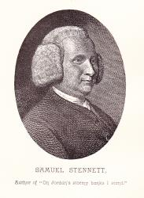

|
|
在約旦河邊我遙望】 |
|
|
1 On Jordan's stormy banks I stand, Refrain: 2 O'er all those wide extended plains 3 No chilling winds or poisonous breath 4 When I shall reach that happy place, United Methodist Hymnal, 1989 |
在約旦河邊我遙望，滿眶淚光盼望， |
|
|
||
|
|
|
|


世紀頌讚449首(On Jordan's Stormy Banks I Stand) 在約旦河邊我遙望，滿眶淚光盼望， https://youtu.be/7NHMtTE1quI -
Bill & Gloria Gaither - Official Video for “On Jordan's Stormy Banks I Stand (Live)" https://youtu.be/LIH37ja36hc -
On Jordan's Stormy Banks - Indelible Grace https://youtu.be/0J2hXjflmuw
"On Jordan's Stormy Banks" speaks of the new heavens and new earth--the new and future Canaan; the heavenly hope that we shall know as Eden. The hymn pictures for us a people of God "bound for the promised land" while standing "on Jordan's stormy banks". If you have gone through trials and tribulations of great difficulty, stormy banks you could say, then this hymn is for you and for us who stand in the midst of it.
This hymn is set to music by Christopher Miner and first debuted under Indelible Grace. -
On Jordan's Stormy Banks I Stand [Mp Jones] · Indelible Grace Music https://youtu.be/joeALmzCoDw -
| Text: | On Jordan's Stormy Banks |
| Author: | Samuel Stennett |
| Tune: | PROMISED LAND |
| Arranger: | Rigdon M. McIntosh |
| Short Name: | Samuel Stennett |
| Full Name: | Stennett, Samuel, 1727-1795 |
| Birth Year: | 1727 |
| Death Year: | 1795 |
Samuel Stennett was born at Exeter, in 1727.

His father was pastor of a Baptist congregation in that city; afterwards of the Baptist Chapel, Little Wild Street, London. In this latter pastorate the son succeeded the father in 1758. He died in 1795. Dr. Stennett was the author of several doctrinal works, and a few hymns.
--Annotations of the Hymnal, Charles Hutchins, M.A. 1872.
Text:
The original text of this hymn was in seven stanzas with no refrain. It was written by Samuel Stennett, who was an English minister, and first appeared in John Rippon's A Selection of Hymns in 1787 in London. The theme of this full text is the vision of the believer as he or she approaches death, based on the description of heaven in Revelation 22.
This text made its way to America and was adapted there to a different view. The elimination of three stanzas (original st. 2, 3, and 7) and the addition of a camp-meeting refrain alter the picture. In the American version, this hymn is a song for one still on the journey to a nice place instead of Stennett's picture of one who has glimpsed a breathtaking scene so near that one can almost touch it. The collection that made this text well-known was William Walker's Southern Harmony of 1835, in which at least the first stanza of this hymn appears four times, each with a different refrain and tune. The refrain that is most common in modern hymnals begins “I am bound for the Promised Land.”
Tune:
The tune to which this hymn is most commonly sung is PROMISED LAND, which appeared at number 51 in William Walker's Southern Harmony in 1835; it was attributed to “Miss M. Durham,” who has not yet been identified. It is named after the refrain. The original version of the tune was in three-part harmony with the tune in the middle part in a minor key. Rigdon McIntosh revised the rhythm and transcribed the tune to a major key for publication in A Collection of Hymns and Tunes in 1874. This suited the musical fashion of the time, and it is the version found in modern hymnals.
When/Why/How:
This hymn is suitable for services with an eschatological theme or preaching on Revelation 22. Other hymns that would blend well musically and thematically include “When We All Get to Heaven” and “Shall We Gather at the River?” For blended worship services, a contemporary tune for this text was written by Christopher Miner of Indelible Grace. A SAB choral arrangement that shows the charm of the original minor key version of the tune is “The Promised Land.” A bass instrumental solo that would work well for a postlude is found in “Early American Hymns.”
Tiffany Shomsky,
Hymnary.org
Tune Information
| Title: | PROMISED LAND (American) |
| Composer: | Matilda T. Durham |
| Meter: | 8.6.8.6 with refrain |
| Incipit: | 13334 54442 33345 |
| Key: | D Major |
| Source: | American folk hymn;Southern Harmony, 1835 |
| Copyright: | Public Domain |
| Short Name: | Matilda T. Durham |
| Full Name: | Durham, Matilda T., 1815-1901 |
| Birth Year: | 1815 |
| Death Year: | 1901 |
A woman of remarkable
intelligence and talents; a most colorful personality. She wrote interesting
articles for the religious papers of the day, being noted for the witty
repartee that characterized her work. She was outstanding as a music teacher
and composer of music, some of her songs being "On Jordan's Stormy Banks",
"Heavenly Treasure", and "Star of Columbia".
- from www.Kletke.com
| Short Name: | R. M. McIntosh |
| Full Name: | McIntosh, R. M. (Rigdon M.), 1836-1889 |
| Birth Year: | 1836 |
| Death Year: | 1889 |
Used Pseudonym: Robert M.
McIntosh
==========
Rigdon (Robert) McCoy McIntosh USA 1836-1899
Born at Maury County, TN, into a farming family, he attended Jackson College
in Columbia, TN, graduating in 1854. He studied music under Asa Everett in
Richmond, VA, and became a traveling singing school teacher. He also served
briefly in the Civil War. He wrote several hymns during this period of his
life. In 1860 he married Sarah McGlasson, and they had a daughter, Loulie
Everett. In 1875 he was appointed head of the Vanderbilt University Music
Department in Nashville, TN. In 1877 he joined the faculty of Emory College,
Oxford, GA. In 1895 he left Emory College to devote his time to the R M
McIntosh Publishing Company. He also served as music editor of the Methodist
Episcopal Church South Publishing House for over 30 years. His song book
publications include: “Good news” (1876), “Light & life” (1881), “Prayer &
praise” (1883), “New life” (1879), “New life #2” (1886), and “Songs of
service” (1896). He died in Atlanta, GA.
John Perry
´美國十九世紀初期再次興起屬靈大復興，稱為「第二 次大覺醒運動」(Second Great Awakening)
´大都集中在戶外聚會，稱為「帳篷大會」(camp meeting)，大多為衛理公會、浸信會與長老會的信徒
´聚會主要的活動之一就是唱詩，詩歌稱為 <營會詩歌>
(camp meeting hymn)
´歌詞述說個人得救的喜樂與對將來天家的盼望
´大多來自於當時流行的歌謠，容易學，容易背誦
´副歌
´參看《世紀頌讚》#449
History of Hymns: "On Jordan's Stormy Banks I Stand"
BY C. MICHAEL HAWN
"On Jordan's Stormy Banks I Stand"
Samuel Stennett
The United Methodist Hymnal, No. 724

On Jordan’s stormy banks I stand,
And cast a wishful eye
To Canaan’s fair and happy land,
Where my possessions lie.
I am bound for the promised land;
Oh who will come and go with me?
I am bound for the promised land.
Samuel Stennett (1727-1795), an English Baptist, came from a long line of
ministers. He was the son of a Seventh-Day Baptist pastor.
In the 18th century, university education was not easily available to
nonconformist families—those who refused to swear allegiance to the Church
of England. Stennett did study at the academy at Miles End with distinction,
however.
In spite of his nonconformist religious stance, Stennett was a personal
friend to the reigning monarch, King George III. Stennett was honored in
1763 with a doctor of divinity degree from King’s College, Aberdeen, for his
accomplishments.
He served as an assistant to his father in his congregation in 1747 and
assumed the position of pastor upon his father’s death in 1758. He was
called as pastor of the Sabbatarian Baptist Church in 1767, a congregation
that had been served by his grandfather, but declined the call. While
continuing his other position, he preached to the Sabbatarian congregation
every Saturday for 20 years.
John Rippon, an English Baptist pastor, published in 1787 an influential
collection, A
Selection of Hymns from the Best Authors. Thirty-eight of Stennett’s
hymns appeared in this popular collection. Among those was a hymn under the
heading of “Heaven Anticipated” with the title of “The Promised Land” in
eight four-line stanzas.
The hymn as it appeared in America looked and sounded much different.
William Walker’s The
Southern Harmony (1835) was the first to include “The
Promised Land.” This was one of the most popular of the 19th-century,
oblong-tune books with shaped notes.
The tune PROMISED LAND was paired with the text. The
Southern Harmony attributes the tune to “Miss M. Durham”
but we know nothing else about the composer. The tune has many of the
characteristics the traditional folk melodies of the time.
Originally written in a minor mode, Rigdon M. McIntosh, a Southern musician,
altered the tune to the major mode, and as was customary among American
evangelicals in the 19th century added a refrain beginning with “I am bound
for the promised land.” This version was published in 1895 in H. R.
Christie’s Gospel
Light and has become the standard version for many hymnals
since that time.
From the start, the four stanzas focus on heaven. The singer stands on the
banks of the Jordan River looking across to the “fair and happy land” of
Canaan—a metaphoric mixture of images from the books of Exodus and
Revelation. Our true “possessions” lie in Canaan (Heaven) and not on the
earthly side of Jordan.
In stanza two we find that Canaan is a land of “wide extended plains” where
“the eternal day” is always shining. In this land Jesus (“God the Son”)
reigns. Furthermore, stanza three tells us that Canaan is a spiritually
healthful place to live: “No chilling winds or poisonous breath can reach
that healthful shore.” Therefore, “sickness and sorrow, pain and death” do
not exist in Canaan.
In the final stanza, the singer obviously cannot wait to get there. Upon
arrival in the Promised Land, we will “see [our] Father’s face, and in his
bosom rest.” The refrain gives the hymn a sense of marching forward to
eternal life.
Carlton R. Young, editor of The
UM Hymnal, places this hymn within the context 19th-century American
expansion: “The British poet composed these apocalyptic lines with an ear
towards Exodus and Revelation in another setting. USA evangelicals and their
song transformed the text into earthly and vital metaphors of the vision,
vigor, enthusiasm, and optimism of frontier life moving on to the promised
land of Kentucky or Missouri.”
Dr. Hawn is professor of sacred music at Perkins School of Theology.
https://www.umcdiscipleship.org/resources/history-of-hymns-on-jordans-stormy-banks-i-stand
"ON JORDAN’S STORMY BANKS" hymnstudiesblog
"And they sing the song of Moses…and the song of the Lamb" (Rev. 15.3)
INTRO.:
A song which pictures heaven as a place which we can view by faith and hope there to sing the song of Moses and the Lamb is "On Jordan’s Stormy Banks" (#s 193 and 254 in Hymns for Worship Revised, #461 in Sacred Selections for the Church). The text was written by Samuel Stennett, who was born on June 1, 1727, at Exeter, England, where his father, Joseph Stennett, was a Baptist minister. Ten years later, while Samuel was still just a boy, the family moved to London, England, where Joseph served as minister with the Little Wild St. Baptist Church in the suburb of Lincoln’s Inn Fields. Because dissenters could not attend universities at that time, Samuel was educated by John Hubbard at Stepney and by John Walker at the Academy of Miles End; however, he later received an honorary doctor’s degree from King’s College in Aberdeen, Scotland.
In 1736, young Stennett was invited to speak at the Sabbatarian Baptist Church where his grandfather, who was also named Joseph and who had also produced hymns, had been minister for 23 years, and he remained to preach there every Saturday until 1747 when he became assistant to his father. Upon Joseph’s death in 1758, Samuel succeeded him as sole minister at Little Wild St. One of the members there was John Howard, a well-known English philanthropist and prison reformer. Stennett was also a personal friend of King George III and became known as one of the greatest dissenting preachers of his day, using his respect and influence to promote social reforms and religious freedom by entreating Parliament to grant dissenters relief from persecution. Two of his works, written in 1772 and 1775, argue against sprinkling for baptism and baptizing infants. Many of his works were reprinted as a set in 1784.
To the 1787 songbook A Selection of Hymns Stennett contributed 39 hymns for editor John Rippon (1751-1836). The one beginning, "On Jordan’s stormy banks I stand," first appeared there under the heading "Heaven Anticipated" in eight stanzas. Another well known one is "Majestic Sweetness." Continuing his work at Little Wild St. for the rest of his life, Stennett died in London on Aug. 24, 1795. Many people are familiar with a traditional American folk tune (Promised Land), containing the anonymous chorus, "I am bound for the Promised Land," that has often been used with Stennett’s text. A new tune (Evergreen Shore) was composed for this song, perhaps as early as 1860, by Tullius Clinton O’Kane (1830-1912), It first appeared in his 1877 hymnbook Jasper and Gold. The refrain was not part of Stennett’s original poem but was added, probably by O’Kane.
Among hymnbooks published by members of the Lord’s church during the twentieth century for use in churches of Christ, the song appeared in the 1921 Great Songs of the Church (No. 1) and the 1937 Great Songs of the Church No. 2 (the latter having both tunes) both edited by E. L. Jorgenson; the 1935 Christian Hymns (No. 1), the 1948 Christian Hymns No. 2, and the 1966 Christian Hymns No. 3 (all three having both tunes) all edited by L. O. Sanderson; the 1963 Abiding Hymns edited by Robert C. Welch; and the 1963 Christian Hymnal (with both tunes) edited by J. Nelson Slater. Today it may be found in the 1971 Songs of the Church, the 1990 Songs of the Church 21st C. Ed., and the 1994 Songs of Faith and Praise (all with both tunes) all edited by Alton H. Howard; the 1978/1983 Church Gospel Songs and Hymns (with both tunes) edited by V. E. Howard; the 1986 Great Songs Revised (with both tunes) edited by Forrest M. McCann; and the 1992 Praise for the Lord (with both tunes) edited by John P. Wiegand; in addition to Hymns for Worship, Sacred Selections for the Church, and the 2007 Sacred Songs of the Church (with both tunes) edited by William D. Jeffcoat.
The song’s expressed anticipation of heaven has always been an important trait of God’s people.
I. According to stanza 1, one reason that we anticipate heaven because that is
where our possessions lie
"On Jordan’s stormy banks I stand, And cast a wishful eye
To Canaan’s fair and happy land Where my possessions lie."
A. To the Christian, death is represented by standing on Jordan’s stormy banks
just as the Israelites crossed over the Jordan River: Josh. 3.14-17
B. Also, to the Christian, heaven is represented by Canaan’s happy land just as
the Israelites looked forward to the land flowing with milk and honey: Num.
14.7-8
C. Thus, Christians who have served God faithfully have laid up treasures in
heaven so that there is where their true possessions lie:
Matt. 6.19-20, Heb. 10.34
II. According to stanza 2, another reason that we anticipate heaven is because
that is where God is
"O’er all those wide, extended plains Shines one eternal day;
There God the Sun forever reigns, And scatters night away."
A. Heaven is pictured as a country with wide, extended plains: Heb. 11.13-16
B. In this country shines one eternal day because there is no night there: Rev.
21.23
C. It is God the eternal Sun who reigns there upon His throne: Rev. 4.2-3
III. According to stanza 3, still another reason that we anticipate heaven is
because of the rest that is found there
"When shall I reach that happy place, And be forever blest?
When shall I see my Father’s face, And in His bosom rest?"
A. Heaven will be a happy place because God will wipe away all tears and their
causes: Rev. 21.4
B. We shall be forever blest there because we shall receive eternal life: Mk.
10.29-30
C. Also, like Canaan was a land of rest to the wandering Israelites, so heaven
will be our rest: Heb. 4.8-9
IV. According to stanza 4, one other reason that we anticipate heaven is because
our hope is not in this life but on the other side of Jordan’s wave
"Filled with delight, my raptured soul Would here no longer stay;
Though Jordan’s waves around me roll, Fearless I’d launch away."
A. When it comes our time to depart this life, we should no longer want to stay
here if we have truly set our affections on things above rather than the things
of this earth: Col. 3.1-2
B. Again, Jordan’s waves represent the time of death, and for the Christian,
death simply is an opportunity to depart and be with Christ: Phil. 1.23
C. Therefore, we shall launch away knowing that if in this life only we have
hope we would be most pitiable, but that because Jesus Christ was raised from
the dead, we can have the hope of eternal life: 1 Cor. 15.17-20
CONCL.:
The chorus further describes the glory of that eternal land where we shall sing
the song of Moses and the Lamb:
"We will rest in the fair and happy land, Just across on the evergreen shore,
Sing the song of Moses and the Lamb by and by, And dwell with Jesus evermore."
For those who like both melodies, there are actually enough stanzas to make two
separate songs (see the separate listing for "I Am Bound for the Promised
Land"). Yet, whichever tune one might prefer, the song reminds us that we must
determine to set our values more strongly on heaven as we constantly move closer
to that time when we shall stand "On Jordan’s Stormy Banks."
https://hymnstudiesblog.wordpress.com/2008/10/10/quoton-jordan039s-stormy-banksquot/
Words: Samuel Stennett (b. June 1, 1727; d. Aug. 24,
1795)
Music: Promised Land, by Matilda T. Durham (b. Jan. 17,
1815; d. July 30, 1901)
Links:
Wordwise Hymns
The Cyber
Hymnal
Hymnary.org
Note: Ten years after young Sam was born, his father became the pastor of a Baptist church, in London, England. In later years, Samuel Stennett became his father’s assistant, and finally succeeded his father as pastor, a ministry he continued until his death in 1795. He was considered a fine scholar, and was a friend of King George III.
The hymn was first published in John Rippon’s Selection of Hymns (1787), under the heading “Heaven Anticipated.” The refrain was added later. The tune now most familiarly used with the song was published in America, in William Walker’s Southern Harmony, in 1835. It is attributed there to a Miss M. Durham, but we know no more about her. The tune was written in a minor key, in vogue at the time. But in 1895 Rigdon McIntosh changed this to a major key and added the refrain.
Ira Sankey tells us, in My Life, and the Story of the Gospel Hymns that, while visiting the Holy Land, he sang this hymn from the spot near the Jordan River from which Moses viewed the land of Canaan. He says that, since the area is not generally “stormy,” the word “rugged” was commonly substituted in the first line.
CH-1) On Jordan’s stormy banks I stand,
And cast a wishful eye
To Canaan’s fair and happy land,
Where my possessions lie.
I am bound for the promised land,
I am bound for the promised land;
Oh who will come and go with me?
I am bound for the promised land.
In the Bible, we’re told how the people of Israel, delivered from years of bondage in Egypt, were poised on the eastern shore of the Jordan River, ready to cross over and claim the land of Canaan as their own. Referred to as “the land of promise” (Heb. 11:9), God had pledged it as a permanent possession to the descendants of Abraham centuries before (Gen. 12:1-2, 7; 13:15; 17:8). Now it was time to conquer in the name of the Lord.
The miracles of God attending the physical crossing of the Jordan (Josh. 3), and the conquest of the city of Jericho (Josh. 6), provide an illustration in the spiritual realm of what God does in saving lost sinners, through faith in Christ. Moses had said to the people, “He [the Lord] brought us out from there [Egyptian bondage] that He might bring us in, to give us the land of which he swore to our fathers” (Deut. 6:23).
Similarly, of the individual Christian, we can say that the Lord brought us out of sin’s darkness and bondage, that he might bring us in to the light of His love and to new and abundant life (Jn. 10:10). He has “delivered us from the power of darkness and conveyed us into the kingdom of the Son of His love, in whom we have redemption through His blood, the forgiveness of sins” (Col. 1:13-14).
Life didn’t become perfect for the Israelites in the land of Canaan. There were still challenges to face and victories to be won. And it’s the same with the Christian life. Trusting Christ as Saviour doesn’t suddenly make us sinless, or the life we live perfect. But through God’s daily grace we have the resources available to deal with what lies ahead (cf. Phil. 4:19; Heb. 4:14-16).
Canaan thus provides a picture of the abundant Christian life–a life enriched by God’s daily provision, but one in which there are still battles to be fought in the name of the Lord. However, having said that, you will find that a few of our hymns use the Jordan River as a symbol of physical death, and Canaan as a picture of our future home in heaven.
I don’t think the application works as well that way. In heaven, our long war with Satan will be over (Rev. 20:10), and all that hurts and harms us will be gone forever (Rev. 21:4). But, imperfect as the imagery is, there is a sense in which the heavenly kingdom is the Christian’s Promised Land, our future and eternal home.
CH-3) There generous fruits that never fail,
On trees immortal grow;
There rocks and hills, and brooks and vales,
With milk and honey flow.
CH-4) O’er all those wide extended plains
Shines one eternal day;
There God the Son forever reigns,
And scatters night away.
CH-5) No chilling winds or poisonous breath
Can reach that healthful shore;
Sickness and sorrow, pain and death,
Are felt and feared no more.
Questions:
1) What gives you certainty that you are bound, on day, for the promised
land of heaven?
2) What are your favourite hymns about heaven?
https://wordwisehymns.com/2015/04/13/on-jordans-stormy-banks-i-stand/